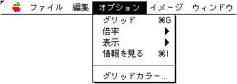
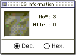
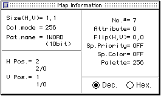

★Graphic Tools Guide
★MAP/SCREENエディタユーザーズマニュアル
★Graphic Tools Guide
★MAP/SCREENエディタユーザーズマニュアル
▲
戻る｜
進む▼
MAP/SCREENエディタユーザーズマニュアル
■オプションメニュー

- ●グリッド
- 各編集ウィンドウにキャラクタ単位の格子を表示します。マップウィンドウにはページ単位の格子も表示します。
- ●倍率
- 各編集ウィンドウの表示倍率(×1,×2,×4)を指定します。マップウィンドウは縮小表示(1/2,1/4)も可能です。
- ●表示
- 各編集ウィンドウに合成表示するデータ種別を指定します。
- ◆アトリビュート
- アトリビュート番号が表示されます。
- ◆特殊プライオリティ
- 特殊プライオリティフラグの立ったキャラクタに青い市松模様が表示されます。
特殊プライオリティ表示は、マップウィンドウでのみ表示可能です。
- ◆特殊カラー演算
- 特殊カラー演算フラグの立ったキャラクタに赤い市松模様が表示されます。
特殊カラー演算表示は、マップウィンドウでのみ表示可能です。
- ●情報を見る...
- 「キャラクタ編集」「マップ編集」時に、情報ウィンドウを表示します。
- ◆キャラクタウィンドウ情報

- ◆マップウィンドウ情報

- 両情報ウィンドウ共に、表示の形式を10進・16進のいずれかから選択することができます。
- ◆Dec.
- 10進数で情報を表示します。
- ◆Hex.
- 16進数で情報を表示します。
- ●グリッドカラー
- 格子の表示色を設定します。アトリビュート番号も、ここで設定された色で表示されます。
キャラクタ・マップ両ウィンドウ個別に、異なる色が設定可能です。イメージウィンドウはキャラクタウィンドウで設定された表示色を使用します。
▲
戻る｜
進む▼
★Graphic Tools Guide
★MAP/SCREENエディタユーザーズマニュアル
Copyright SEGA ENTERPRISES, LTD., 1997